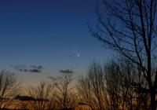
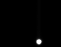

Images of the Sky Taken by CAS Members
Click the thumbnails to see each set. Depending on your connection, the images may take a while to load.
|  | March 14 2013 | The Comet PanSTARRS, taken by Richard Hennig |
| June 5 2012 | Transit of Venus | |
 |
May 22 2007 | Another Cookbook photo, this time of the Hercules Cluster (M 13). |
| May 22 2007 | Some trial images the Cookbook camera took of the planet Saturn. | |
| March 30 2007 | More atmospheric effects, this time a "moon dog". | |
| [992 KB] | ||
| March 29 2007 | A mosaic of the Moon in front of Saturn, with some of Saturn's moons visible. | |
| [261 KB] | ||
| March 11 2007 | Some photos we took during a visit to Mt. Pleasant. | |
| [3349 KB] | ||
| December 14 2006 | A picture of the aurora outburst that hit us at the end of the year. | |
| [305 KB] | ||
| November 26 2006 | The Orion Nebula, one of the most impressive deep-sky objects visible from Fuertes. | |
| [332 KB] | ||
| November 10 2006 | Strange and wonderful atmospheric effects. | |
| October 29 2006 | A picture of the winter sky, featuring Orion. | |
| [1008 KB] | ||
| September 27 2006 | A first glimpse at Orion rising over the observatory dome. | |
| [486 KB] | ||
| September 11 2006 | Two planetary nebulae. | |
| [1148 KB] | ||
| September 9 2006 | A mosaic of the entire Moon just past full. | |
| [1577 KB] | ||
| August 12 2006 | Some sunspots, again with Mike's camera. | |
| [693 KB] | ||
 |
July 30 2006 | Some moon pictures taken by Mike with his digital camera. |
| [2736 KB] | ||
| November 4 2005 | A view of Mars created by a Fuertes visitor using a webcam and some image processing. | |
|  | October 30 2005 | Our first attempt at recording an image of Mars. The planet turned out a bit too bright. |
| September 10 2005 | Some pictures of the aurora we took during a training session. | |
| [1519 KB] | ||